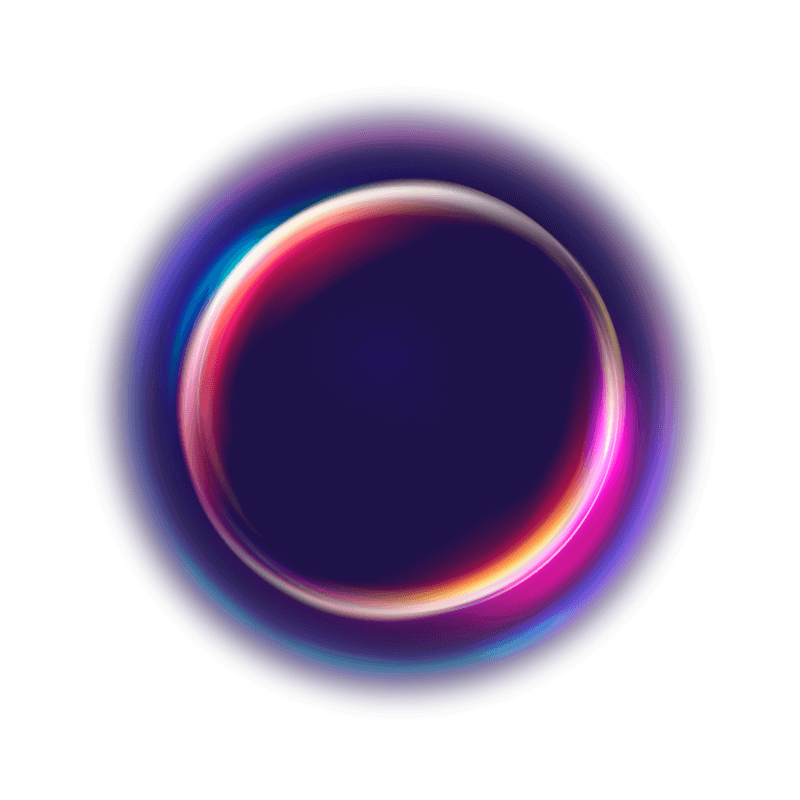
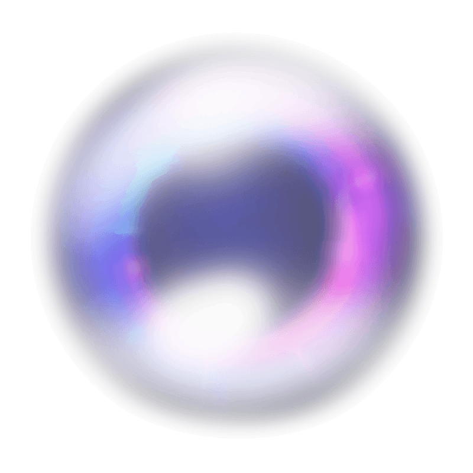
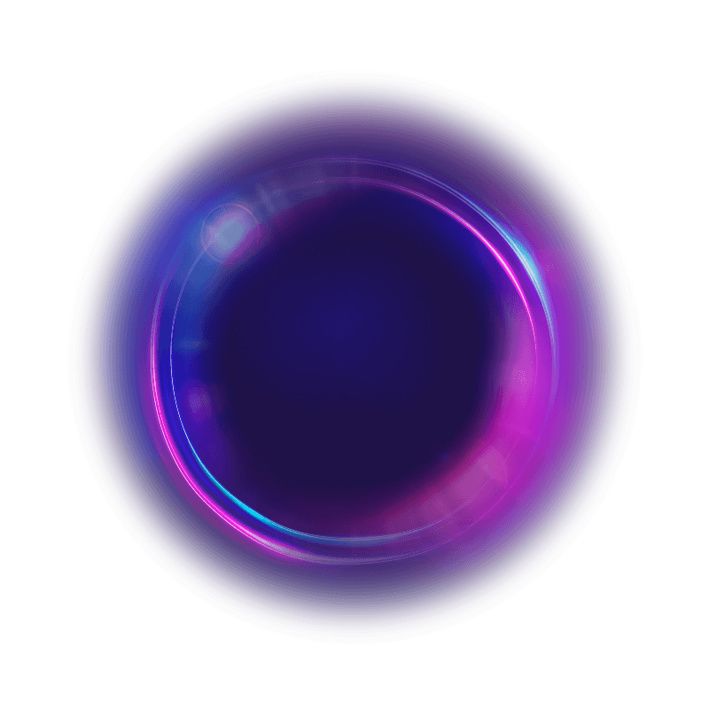

Explore todos os detalhes desta página.APRESENTAÇÃO PROFISSIONAL



Mais que uma apresentação, uma experiência
Tecnologia e negócios se encontram em uma imersão completa, inspirando você a pensar de maneira inovadora. Num mundo de conteúdos rápidos e superficiais, há valor em ouvir histórias impactantes, explorar novidades e absorver novos conceitos e práticas. Essa é a jornada para o crescimento e evolução profissional.
Guilherme Romera
Analista de infraestrutura
CASTRILLON AUTO PEÇAS - SEDE
05/12/22 | ATUAL EMPREGO
Ao longo de dois anos na Castrillon Auto Peças, implementei soluções inovadoras que revolucionaram a comunicação e os processos internos da empresa. Entre as realizações mais notáveis estão a implantação da Central de Serviços GLPI, que agilizou significativamente o atendimento às solicitações internas, e o desenvolvimento de uma Intranet. Essa plataforma centraliza procedimentos operacionais (POP's), notícias e outros conteúdos relevantes, promovendo maior eficiência e engajamento da equipa.
Outros empregos
2017/2019
Gráfica Imprimais
2019/2022
Gráfica GRWEBPRINT
Indique Um Amigo E ganhe prêmios
Participe do Universo TOTVS 2024 e ganhe prêmios exclusivos com nosso programa de indicação: Amigo Indica Amigo! Garanta seu ingresso, convide seus amigos e comece a acumular pontos agora mesmo!
Minha Jornada na Tecnologia: Da Curiosidade ao Profissionalismo
Desde os 14 anos, quando comecei a trabalhar ao lado dos meus pais, a área de tecnologia sempre fez parte da minha vida. Atendíamos pequenas empresas e foi nesse ambiente que descobri meu verdadeiro interesse pela tecnologia. Aos 18, consegui o meu primeiro emprego na Gráfica IMPRIMAIS, onde tive a responsabilidade de cuidar dos computadores, da rede e das impressoras plotters, sempre visando a melhor eficiência e desempenho.
Esse período abriu portas para um curso de manutenção de impressoras de pequeno e grande porte em São Paulo, uma experiência que ampliou minha visão profissional. Quando a Imprimais fechou suas portas e mudou de ramo, aos 20 anos, decidi dar um passo ousado: abrir minha própria gráfica, a GRWEBPRINT. A experiência de gerir a empresa durante dois anos foi enriquecedora, permitindo-me adquirir vasto conhecimento na área de comunicação visual e personalização.
Porém, percebi que o meu verdadeiro interesse estava na área de tecnologia da informação. Foi então que decidi ingressar em uma empresa de grande porte, onde pude desenvolver-me de maneira significativa. Ali, administrei firewalls Fortinet, mantendo VPNs seguras e implementando o SD-WAN com redundância em dois links.
Além disso, gerenciei servidores Windows, com foco em DNS, DHCP, Active Directory, IIS e Hyper-V. No ambiente Linux, tive a oportunidade de implantar uma central de serviços GLPI completamente funcional com abertura de chamados por e-mail, pela interface e whatsapp fora o inventario de ativos feito via agente instalado por GPO, utilizando firewalld, SELinux e Certificado SSL para garantir a segurança dos sistemas.
Hoje, a maior parte das minhas aplicações roda em Linux, consolidando meu conhecimento e atuação nesse sistema operacional. Cada passo da minha trajetória foi crucial para a minha formação profissional e técnica, preparando-me para enfrentar desafios e continuar crescendo na área de TI.